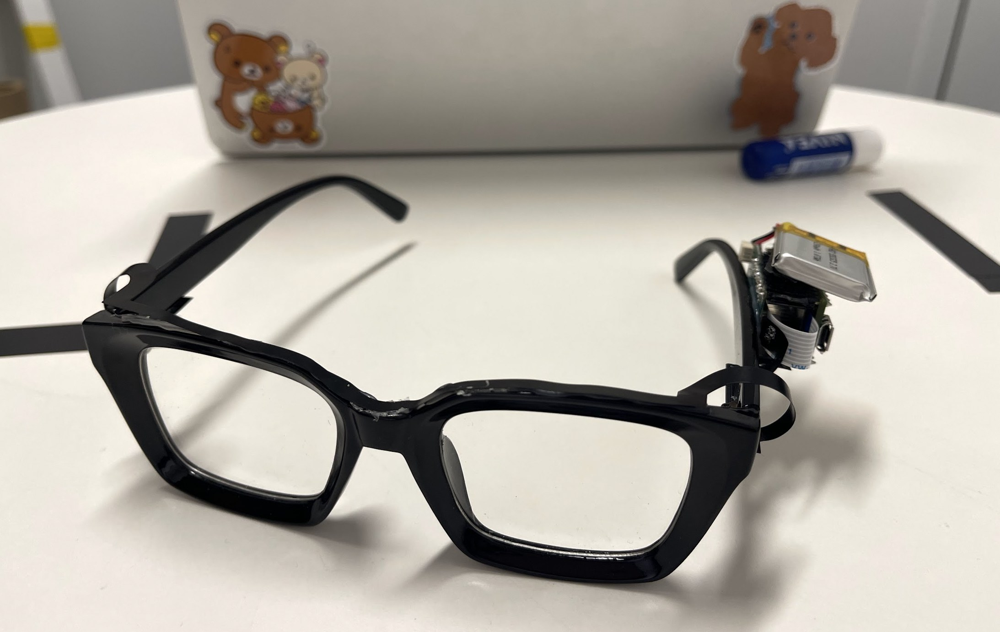
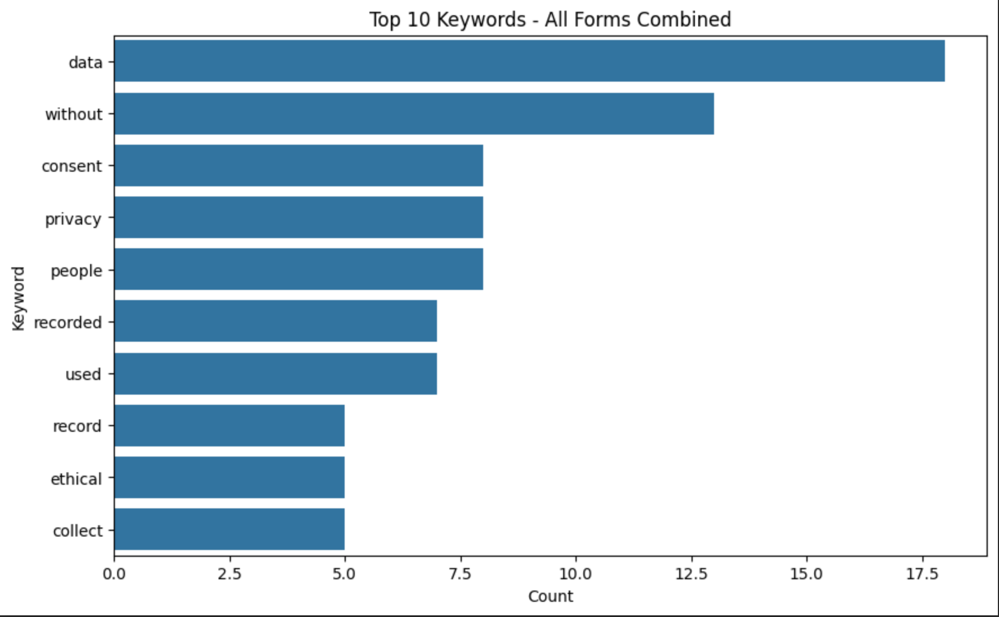
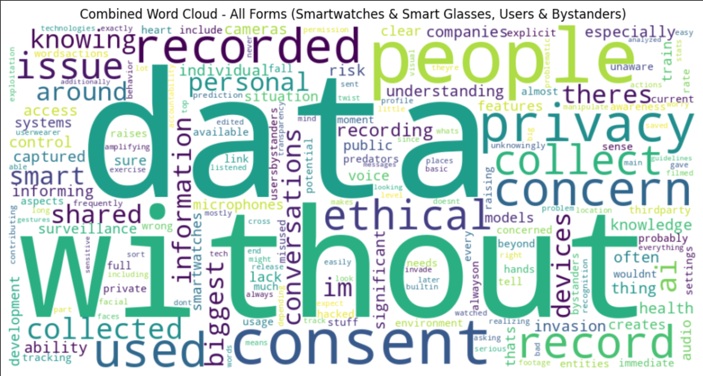
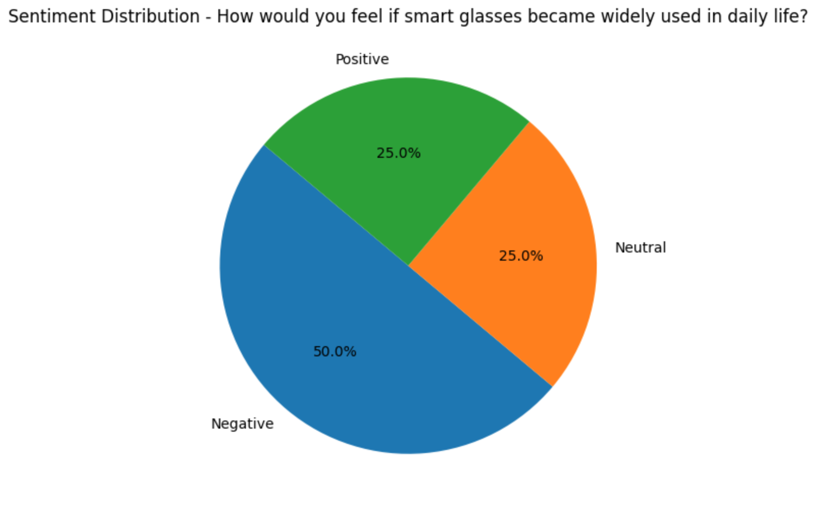
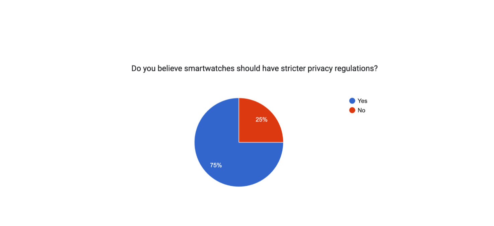
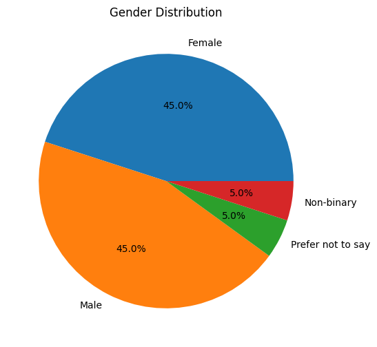
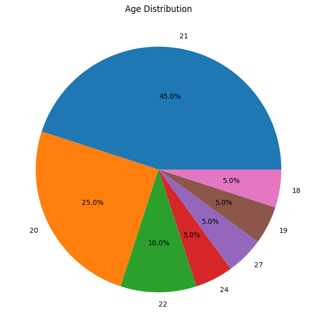

What happens to privacy when a device doesn't just watch you, but everyone around you too?
For Cornell's Ubiquitous Computing course, my team designed a wearable prototype and ran a human-subjects study comparing smartwatches to AI glasses, and specifically looked at how bystanders, not just wearers, experience that technology.
- Problem: Most wearable privacy research looks at the person wearing the device. Almost none of it asks what happens to the people around a device that can sense its whole environment.
- What I did: Designed and built the smart-glasses and smartwatch prototypes myself, ran a human-subjects study across both wearers and bystanders, and redesigned the study after early pilots weren't asking hard enough questions.
- Key finding: 100% of smartwatch users flagged unclear privacy policies, yet said they'd keep using the device anyway, and bystanders reacted more strongly than wearers did.
- Impact: Showed that privacy is social, not just individual, a wearable changes the privacy environment for everyone nearby, not only the person who chose to wear it.
The gap we found
There's plenty of research on privacy concerns around health wearables, like Fitbits, smartwatches, and biometric data. There's a lot less on what happens when a wearable can sense the environment and the people around it, not just its owner.
So instead of asking "are people worried about privacy," we asked something more specific: does that worry change when the device can also affect people who never opted into wearing it? We compared a personal wearable (collects data mainly about the wearer, like a smartwatch) against an environmental wearable (can sense the surroundings and nearby people, like AI glasses), and studied both wearers and bystanders.
The prototype
We designed and built the wearable ourselves, specifically to be visible enough that we could study whether people noticed it, whether noticing changed their behavior, and whether a visible new device felt more intrusive than a familiar smartwatch. This page focuses on the study; the hardware and firmware side of the build is written up on the fun projects page.


My role
- Helped design the physical prototype and the experimental conditions
- Completed human-subjects research training and helped design participant tasks and interview questions
- Ran in-person experiments and took behavioral observation notes
- Conducted and analyzed interviews
- Built the Python text-analysis pipeline: cleaning open-ended responses, sentiment analysis, keyword extraction, word co-occurrence heatmaps
How the study evolved
Our first pilot didn't reveal anything real
We ran six pilot sessions, mostly with friends and roommates. The tasks were too easy and the responses were shallow; there wasn't enough at stake for anyone to reveal an actual privacy reaction. Asking "are you concerned about privacy?" gets you a polite answer, not a real one.
We redesigned around actual behavioral pressure
We added low-stakes conversation (hobbies, movies) and high-stakes conversation (political opinions, ethical dilemmas, protests and policing) so we could compare what people said with what they were willing to say once the topic got personal. We also added fitness tasks for the smartwatch condition, since smartwatch privacy is less about what you say and more about what your body reveals. We also ran a control condition, so we could separate "this is uncomfortable because I'm being studied" from "this is uncomfortable because of this specific device."
Observed without adding another surveillance device
We didn't want to introduce a camera or recorder just to observe participants; that would have added its own privacy variable. An observer took notes by hand instead.
Built a full NLP pipeline for the open-ended responses
Google Form responses went through Python: text cleaning, stopword removal (including obvious terms like "glasses" that showed up in nearly every response and drowned out anything more meaningful), sentiment scoring with TextBlob, keyword frequency, and word co-occurrence heatmaps to see which concepts (consent, data, control) actually clustered together in people's answers.


What we found
Smart glasses changed the privacy equation
75% of glasses users felt responsible for protecting bystander privacy, and 75% thought bystander consent should be explicitly required.
Bystanders were the most concerned group
Every bystander in the glasses condition noticed the device; 3 of 4 believed consent should be required and reported discomfort at the idea of being recorded.
Smartwatches had become "normal"
100% of smartwatch users said the privacy policies were unclear, and most said they'd keep using the device anyway. Familiarity and convenience outweighed the concern they'd just voiced. Still, 75% of participants overall said smartwatches specifically should face stricter privacy regulation: comfort using something doesn't mean people think it's adequately regulated.
Disclosure didn't change much behavior
Telling participants their data might train an AI model made people think about the issue, but rarely changed what they actually did. Several told us afterward they'd simply forgotten the device was there during the conversation.


Bystanders, side by side
Comparing smartwatch bystanders against smart-glasses bystanders directly made the gap easier to see than any single stat could:
| Category | Smartwatch bystanders | Smart-glasses bystanders |
|---|---|---|
| General concern | Mild to moderate | High, urgent |
| Consent | Mentioned but not dominant | Central focus |
| Emotional tone | Neutral | Anxious |
| Privacy impact | Thoughtful, low risk | Emotionally charged |
| Language used | Softer keywords | Strong negative keywords |
| Trust in AI-data policies | Mostly distrustful, somewhat aware | Largely distrustful, unaware |
Study sample


What I learned
Privacy is social, not just individual. A wearable changes the privacy environment of everyone nearby, not just the person wearing it. And behavior reveals more than a survey does: people who said they were comfortable still hesitated the moment a conversation turned sensitive. The six "failed" pilots weren't wasted either; they told us our original design wasn't strong enough to elicit a real reaction, which is exactly what let us fix it.
What the next version looks like
- Run a longer field study (days or weeks of actual wearable use) instead of a 30-minute lab session, to see if awareness fades as the novelty does
- Recruit outside the Cornell student population for more demographic range
- Separate physical design from sensing capability, to isolate how a device's appearance (not just what it collects) shapes people's reaction
- Add statistical testing once the sample is large enough to support it